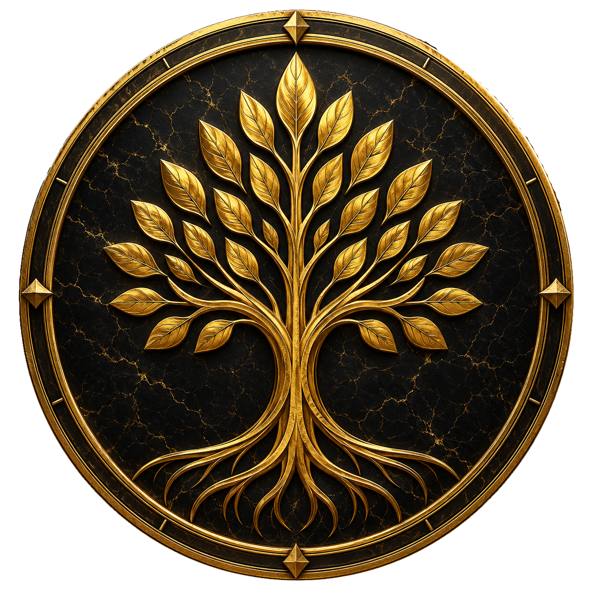

Entra a la comunidad
Pásate por Discord para conocer los anuncios, resolver dudas y confirmar los pasos de acceso al servidor.
Abrir Discord
DESTINY DYNASTY Únete a DiscordMINECRAFT JAVA · DESTINY DYNASTY
Hay lugares que se exploran.
Y otros que se convierten en tu hogar.
Encuentra el tuyo en Destiny Dynasty.
EL SIGUIENTE CAPÍTULO LO ESCRIBES TÚ
Destiny Dynasty es nuestra comunidad de Minecraft Java con un modpack propio. Un punto de encuentro para descubrir nuevos lugares, compartir construcciones y vivir la aventura a tu manera.
Estamos preparando una nueva etapa del mundo y desarrollando nuestro sistema RPG. Sigue las novedades para conocer lo que viene y participa en Discord.
Encuentra a tu genteDESDE EL OTRO LADO DEL PORTAL

Un primer vistazo al launcher que estamos preparando para tu próxima aventura.
Leer novedad
Un mundo limpio, cambios en el modpack y una nueva etapa que compartir.
Leer novedad
Misiones, habilidades y una experiencia RPG propia que sigue tomando forma.
Leer novedadTU PRIMER PASO
Todo lo que necesitas para entrar a Destiny, reunido en un solo lugar.
Pásate por Discord para conocer los anuncios, resolver dudas y confirmar los pasos de acceso al servidor.
Abrir DiscordDestiny Launcher instalará Minecraft, Fabric y los archivos oficiales. La primera descarga pública del launcher está en preparación.
Consultar publicaciones del launcherEl enlace de descarga aparecerá aquí cuando esté disponible.
Con el modpack preparado, conecta a nuestra dirección. También puedes activar la entrada automática desde los ajustes del launcher.
ANTES DE CRUZAR EL PORTAL
Usamos Minecraft Java 1.20.1 con Fabric y el modpack oficial de Destiny. El launcher prepara esos archivos; Minecraft Bedrock no es compatible con este modpack.
La primera publicación pública está en preparación. Esta página mostrará el instalador cuando esté publicado en el repositorio oficial. Mientras tanto, consulta en Discord cómo acceder al modpack.
Aún no hay una fecha anunciada. El nuevo comienzo y el sistema RPG están en preparación. Publicaremos los avances en las novedades y en Discord.
TU HISTORIA MERECE BUENA COMPAÑÍA